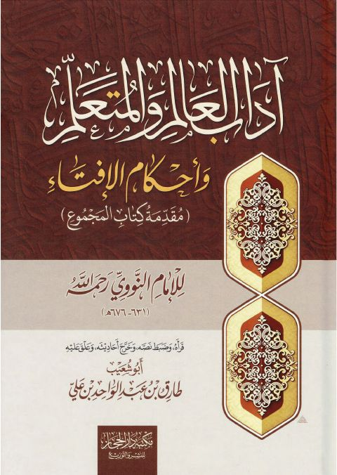

Publishers
مكتبة دار الحجاز
Publisher
Resources
بلوغ المرام من أدلة الأحكام
بلوغ المرام من أدلة الأحكام
أحمد بن علي بن حجر العسقلاني

آداب العالم والمتعلم وأحكام الإفتاء مقدمة كتاب المجموع
آداب العالم والمتعلم وأحكام الإفتاء مقدمة كتاب المجموع
يحيى بن شرف النووي